사회조사분석사-2급 (2017-03-05 기출문제)
1과목: 조사방법론 I
1. 다음 중 과학적 조사가 필요한 사례와 가장 거리가 먼 것은?
- 정량평가 외에 정성평가를 체계화하고 싶을 때
- 임상심리사의 윤리적 갈등을 해소할 필요가 있을 때
- 결혼이주민 조사 시 연구자의 문화적 편견을 검토하고 싶을 때
- 선임 사회조사분석사의 경험적 지식이 타당한지 알고 싶을 때
(정답률: 66%)

2. 자신의 신분을 밝히지 않은 채 자연스럽게 일어나는 사회적 과정에 참여하는 관찰자의 역할은?
- 완전참여자
- 완전관찰자
- 참여자적 관찰자
- 관찰자적 참여자
(정답률: 74%)
3. 조사자가 필요로 하는 자료를 1차 자료와 2차 자료로 구분할 때 1차 자료에 대한 설명으로 틀린 것은?
- 현재 수행 중인 의사 결정 문제를 해결하기 위해 직접 수집한 자료이다.
- 조사목적에 적합한 정보를 필요한 시기에 제공한다.
- 1차 자료를 얻은 후 조사목적과 일치하는 2차 자료의 존재 및 사용가능성을 확인하는 것이 경제적이다.
- 자료 수집에 인력과 시간, 비용이 많이 소요된다.
(정답률: 77%)
4. 심층면접 시 중요하게 고려해야 할 사항으로 틀린 것은?
- 피면접자와 친밀한 관계(rapport)를 형성해야 한다.
- 비밀보장, 안전성 등 피면접자가 편안한 분위기를 느낄 수 있도록 해야 한다.
- 피면접자의 대답을 주의 깊게 경청하여야 하며 이전의 응답과 연결시켜 생각하는 습관을 가져야한다.
- 피면접자가 대답을 하는 도중에 응답내용에 대해 평가적인 코멘트를 자주 해주는 것이 좋다.
(정답률: 85%)
5. 분석단위와 관련된 잠재적 오류와 가장 거리가 먼 것은?
- 동어반복적 오류
- 생태학적 오류
- 개인주의적 오류
- 환원주의적 오류
(정답률: 80%)
6. 관찰방법의 특징이 아닌 것은?
- 연구대상의 행위에서 발생하는 사회적 맥락까지 포착할 수 있다.
- 사회적 관계에 영향을 미치는 사건을 이해하도록 해준다.
- 객관적 사실에 치중하여 피관찰자의 철학, 세계관은 배제한다.
- 다른 연구와의 비교를 통해 규칙성을 확인할 수 있다.
(정답률: 77%)
7. 성(sex) 전환에 대한 일반 국민의 의식을 조사하는 설문지를 작성할 때 가장 주의해야 할 사항은?
- 규범적 응답의 억제
- 복잡한 질문의 회피
- 평이한 언어의 사용
- 즉시적 응답 유도
(정답률: 72%)
8. 가설의 평가기준으로 적합하지 않은 것은?
- 실증조사를 하여 가설의 옳고 그름을 판정할 수 있어야 한다.
- 동일 연구 분야의 다른 가설이나 이론과 연관이 없어야 한다.
- 누구나 쉽게 이용할 수 있도록 필요한 용어만 사용해야 한다.
- 표현뿐만 아니라 실질적으로 간결한 논리로 이루어져야 한다.
(정답률: 85%)
9. 비구조화(비표준화) 면접에 관한 옳은 설명을 모두 고른 것은?
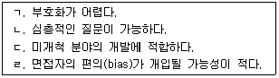
- ㄱ, ㄴ
- ㄷ, ㄹ
- ㄱ, ㄴ, ㄷ
- ㄴ, ㄷ, ㄹ
(정답률: 80%)
10. 연구가설(research hypothesis)에 대한 설명으로 틀린 것은?
- 모든 연구에는 명백히 연구가설을 설정해야 한다.
- 연구가설은 일반적으로 독립변수와 종속변수로 구성된다.
- 연구가설은 예상된 해답으로 경험적으로 검증되지 않은 이론이라 할 수 있다.
- 때로는 연구가설을 경험적으로 검증할 수 있는 작업가설(working hypothesis)로 전환시키는 작업이 필요하다.
(정답률: 53%)
11. 다음 상황에서 제대로 된 인과관계 추리를 위해 특히 고려되어야 할인과관계 요소는?
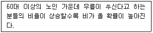
- 공변성
- 시간적 우선성
- 외생 변수의 통제
- 외부 사건의 통제
(정답률: 69%)
12. 이론의 역할에 대한 옳은 설명을 모두 고른 것은?(관리자 입니다. 문제 오류로 모두 정답 처리된 문제 같습니다. 자세한 내용은 해설을 참고하시고, 여기서는 가답안인 4번을 누르면 정잡 처리 됩니다.)
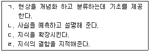
- ㄱ, ㄴ
- ㄷ, ㄹ
- ㄱ, ㄴ, ㄷ
- ㄴ, ㄷ, ㄹ
(정답률: 71%)
13. 폐쇄형 질문과 비교한 개방형 질문에 대한 설명으로 틀린 것은?
- 자료처리에 많은 시간과 노력이 든다.
- 개인 사생활과 관련되거나 민감한 질문일수록 적합하다.
- 연구자가 알지 못했던 정보나 문제점을 발견하는데 유용하다.
- 응답자에게 자기표현의 기회를 줌으로써 응답자의 의견을 존중하는 느낌을 준다.
(정답률: 75%)
14. 실험설계에 대한 설명으로 틀린 것은?
- 실험의 검증력을 극대화 시키고자 하는 시도이다.
- 연구가설의 진위여부를 확인하는 구조화된 절차이다.
- 실험의 내적 타당도를 확보하기 위한 노력이다.
- 조작적 상황을 최대한 배제하고 자연적 상황을 유지해야하는 표준화된 절차이다.
(정답률: 82%)
15. 양적연구와 비교한 질적연구에 대한 설명으로 틀린 것은?
- 성과나 결과보다 주로 절차에 관심을 둔다.
- 관찰행위 자체가 연구대상에 영향을 준다고 본다.
- 조사에 필요한 절차나 단계를 엄격하게 결정하지 않는다.
- 도출되는 연구결과는 잠정적이라기보다 결정적이라는 특성을 갖는다.
(정답률: 66%)
16. 면접조사에서 조사자가 준수해야 할 일반적인 원칙으로 틀린 것은?
- 질문지를 숙지하고 있어야 한다.
- 응답자와 친숙한 분위기를 형성하여야 한다.
- 개방형 질문의 경우에는 응답내용을 해석하고 요약하여 기록하여야 한다.
- 면접자는 응답자가 이질감을 느끼지 않도록 복장이나 언어사용에 유의하여야 한다.
(정답률: 83%)
17. 온라인 사회조사에 대한 설명으로 틀린 것은?
- 응답 여부를 확인할 수 있고 늦어질 경우 독촉메일과 같은 후속조치를 할 수있다.
- 응답자의 신분을 확인할 방법이 제한되어 있어 응답자 적격성 문제가 발생할 수 있다.
- 온라인 사회조사에는 전자우편조사, 전자설문 조사 등이 포함된다.
- 표본편중의 문제를 쉽게 해결할 수 있다.
(정답률: 83%)
18. 다음 중 투표와 관련된 정치여론조사를 신속하게 실시해야 할 경우가장 적합한 자료수집방법은?
- 면접조사
- 전화조사
- 우편조사
- 집단조사
(정답률: 86%)
19. 다음 사례에서 가장 문제될 수 있는 타당도 저해요인은?
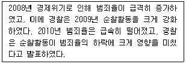
- 성숙효과(maturation effect)
- 통계적 회귀(statistical regression)
- 검사효과(testing effect)
- 도구효과(instrumentation)
(정답률: 68%)
20. 질문지 문항배열에 대한 고려사항으로 적합하지 않은 것은?
- 시작하는 질문은 쉽게 응답할 수 있고 흥미를 유발할 수 있어야 한다.
- 앞의 질문이 다음 질문에 연상 작용을 일으켜 응답에 영향을 미칠 수 있다면 질문들 사이의 간격을 멀리 떨어뜨린다.
- 응답자의 인적사항에 대한 질문은 가능한 한 나중에 한다.
- 질문이 담고 있는 내용의 범위가 좁은 것에서부터 점차 넓어지도록 배열한다.
(정답률: 77%)
21. 해결 가능한 연구문제가 되기 위한 조건과 가장 거리가 먼 것은?
- 기존의 이론 체계와 관련이 있어야 한다.
- 연구현상이 실증적으로 검증 가능해야 한다.
- 연구문제가 관찰 가능한 현상과 밀접히 연결되어야 한다.
- 연구대상이 되는 현상에 대한 명확한 규정이 되어야 한다.
(정답률: 54%)
22. 다음 질문의 응답항목으로 가장 적합한 것은?
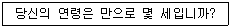
- 1) 30 미만 2) 30~40 3) 40~50 4) 50 이상
- 1) 30 이하 2) 30~40 3) 40~50 4) 50 이상
- 1) 30 미만 2) 30~39 3) 40~49 4) 50 이상
- 1) 30 이하 2) 30~39 3) 40~49 4) 50 이상
(정답률: 85%)
23. 동일한 대상에게 동일한 현상에 대해 서로 다른 시점에 걸쳐 지속적으로 반복측정하는 조사방법은?
- 패널(panel) 조사
- 인서트(insert) 조사
- 콜인(call in) 조사
- 출구조사(exit poll)
(정답률: 86%)
24. 기술조사에 적합한 조사주제를 모두 고른 것은?
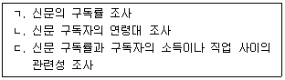
- ㄱ, ㄴ
- ㄴ, ㄷ
- ㄱ, ㄷ
- ㄱ, ㄴ, ㄷ
(정답률: 59%)
25. 다음 사례에 내재된 연구설계의 타당성 저해요인이 아닌 것은?
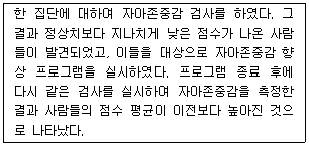
- 검사효과 (testing effect)
- 도구효과 (instrumentation)
- 통계적 회귀 (statistical regression)
- 성숙효과 (maturation effect)
(정답률: 55%)
26. 서베이조사와 비교한 사례연구에 대한 설명으로 틀린 것은?
- 연구대상을 질적으로 파악하고 기술한다.
- 소수대상의 여러 가지 복합적 요인에 대한 복합적 관찰을 한다.
- 연구대상 집단의 공통분모적 성질인 대표성을 추구한다.
- 연구대상의 내면적 · 동태적 양상을 수직적으로 파고드는 조사이다.
(정답률: 50%)
27. 다음에 해당하는 과학적 연구의 특징은?
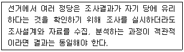
- 상호주관성
- 구체성
- 수정가능성
- 효용성
(정답률: 81%)
28. 종단연구와 비교한 횡단연구의 장점과 가장 거리가 먼 것은?
- 일반적으로 비용이 적게 든다.
- 엄밀한 인과관계의 검증에 유리하다.
- 검사효과로 인해 왜곡될 가능성이 낮다.
- 조사대상자에 대한 사생활침해의 우려가 낮다.
(정답률: 57%)
29. 사회과학적 연구방법 중 연역적 접근방법에 대한 설명으로 옳은 것은?
- 관찰을 통해 현상을 파악한다.
- 탐색적 방법에 주로 이용된다.
- 개별사례를 바탕으로 일반적 유형을 찾아낸다.
- 이론 또는 모형 설정 후 연구를 시작한다.
(정답률: 77%)
30. 다음과 같은 목적에 적합한 조사의 종류는?
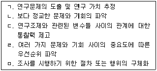
- 탐색조사
- 기술조사
- 종단조사
- 인과조사
(정답률: 73%)
2과목: 조사방법론 II
31. 다음 내용에서 설명하고 있는 척도는?
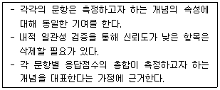
- 리커트척도(likert scale)
- 거트만척도(guttman scale)
- 서스톤척도(thurston scale)
- 의미분화척도(semantic differential scale)
(정답률: 58%)
32. 다음 중 표집틀(sampling frame)을 평가하는 주요 요소와 가장 거리가 먼 것은?
- 포괄성
- 추출확률
- 효율성
- 안정성
(정답률: 58%)
33. 창의성을 측정하기 위해 새롭게 개발된 측정도구의 수렴타당도(convergent validity)가 높은 경우는?
- 새로운 창의성 측정도구와 기존의 창의성 측정 도구로 측정된 점수들 간의 상관이 높은 경우
- 새로운 창의성 측정도구와 지능검사로 측정된 점수들 간의 상관이 높은 경우
- 새로운 창의성 측정도구와 예술성 측정도구로 측정된 점수들 간의 상관이 높은 경우
- 새로운 창의성 측정도구와 신체적 능력 측정 도구로 측정된 점수들 간의 상관이 높은 경우
(정답률: 72%)
34. 다음 중 측정의 수준이 다른 하나는?
- GNP(국민총생산)
- 생활수준
- 도시화율
- 출산율
(정답률: 76%)
35. 표본의 하위집단 분포를 의도적으로 정하여 표본을 임의로 추출하는 방법은?
- 편의표집(convenience sampling)
- 군집표집(cluster sampling)
- 눈덩이 표집(snowball sampling)
- 할당표집(quota sampling)
(정답률: 53%)
36. 표집과 관련된 용어에 대한 설명으로 틀린 것은?
- 모수(parameter)는 표본에서 어떤 변수가 가지고 있는 특성을 요약한 통계치이다.
- 포집률(sampling rate)은 모집단에서 개별요소가 선택될 비율이다.
- 표집간격(sampling interval)은 모집단으로부터 표본을 추출할 때 추출되는 요소와 요소간의 간격을 의미한다.
- 관찰단위(observation unit)는 직접적인 조사 대상을 의미한다.
(정답률: 66%)
37. 확률표본추출방법에 해당하는 것은?
- 할당표집(quota sampling)
- 판단표집(judgement sampling)
- 편의표집(convenience sampling)
- 군집표집(cluster sampling)
(정답률: 75%)
38. 척도의 신뢰도와 타당도의 관계를 표적과 탄착에 비유한 다음 그림에 해당하는 척도의 특성은?
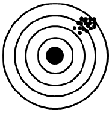
- 타당하나 신뢰할 수 없다.
- 신뢰할 수 있으나 타당하지 않다.
- 타당하고 신뢰할 수 있다.
- 신뢰할 수 없고 타당하지도 않다.
(정답률: 79%)
39. 측정의 신뢰도 평가방법에 관한 설명으로 옳은 것은?
- 내적일관성 분석에서 크론바하 알파값은 낮을수록 신뢰도가 높다.
- 반분법은 측정도구의 동질성이 확보되어야한다.
- 재검사법은 성장, 우연한 사건 등 외생변수의 영향을 쉽게 통제할 수 있다.
- 복수양식법은 동일한 측정도구를 서로 다른 대상의 속성에 대해 측정한다.
(정답률: 55%)
40. 층화표집(stratified random sampling)에 대한 설명으로 틀린 것은?
- 추정값의 표본오차를 감소시켜 표본의 대표성을 높이기 위해 사용되는 방법이다.
- 층화한 부분집단 간은 동질적이고 부분집단 내에서는 이질적이다.
- 층화한 모든 부분집단에서 표본을 추출한다.
- 층화 시 모집단에 대한 지식이 필요하다.
(정답률: 71%)
41. 어떤 사건이나 대상의 특성에 일정한 규칙에 따라 숫자를 부여하는 과정을 무엇이라 하는가?
- 측정
- 척도
- 개념적 정의
- 속성
(정답률: 63%)
42. 척도에 관한 설명으로 틀린 것은?
- 척도는 계량화를 위한 도구이다.
- 불연속은 척도의 중요한 속성이다.
- 척도의 구성 항목은 단일한 차원을 반영해야 한다.
- 척도를 구성하는 방법은 측정하려는 변수의 구조적 성격에 따라 결정된다.
(정답률: 61%)
43. 다음은 어떤 변수에 대한 설명인가?
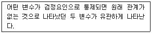
- 예측변수
- 왜곡변수
- 억제변수
- 종속변수
(정답률: 57%)
44. 다음 사례에 해당하는 표본프레임 오류는?
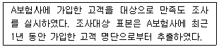
- 모집단과 표본프레임이 동일한 경우
- 모집단이 표본프레임에 포함되는 경우
- 표본프레임이 모집단 내에 포함되는 경우
- 모집단과 표본틀이 전혀 일치하지 않는 경우
(정답률: 60%)
45. 오후 2시부터 4시 사이 서울 강남역을 지나는 행인들 중 접근이 쉬운 사람을 대상으로 신제품에 대한 의견을 물어보는 경우 이에 해당하는 표본추출방법은?
- 판단표집(judgement sampling)
- 편의표집(convenience sampling)
- 층화표집(stratified random sampling)
- 군집표집(cluster sampling)
(정답률: 70%)
46. 조작적 정의(operational definition)에 관한 설명으로 옳은 것은?
- 연구자마다 특정 구성개념에 대한 조작적 정의는 동일해야 한다.
- 구성개념에 대한 이론적이고 추상적인 정의를 일컫는다.
- 구성개념의 조작적 정의가 구체적일수록 후속 연구에서 재현하기가 어렵다.
- 구성개념에 대한 조작적 정의가 연구마다 다를 경우 연구결과가 달라질 수 있다.
(정답률: 69%)
47. 표본의 크기를 결정하는 요소와 가장 거리가 먼 것은?
- 모집단의 동질성
- 조사비용의 한도
- 연구자의 수
- 조사가설의 내용
(정답률: 66%)
48. 다음 중 단순무작위표집을 통하여 자료를 수집하기 어려운 조사는?
- 신용카드 이용자의 불편사항
- 조세제도 개혁에 대한 중산층의 찬반 태도
- 새 입시제도에 대한 고등학생의 찬반 태도
- 국가기술자격시험문제에 대한 시험응시자의 만족도
(정답률: 66%)
49. 측정오차에 관한 설명으로 틀린 것은?
- 체계적 오차는 신뢰도와 관련된다.
- 측정오차는 일관되지 않게 나타날 수 있다.
- 체계적 오차는 자료수집방법이나 수집과정에 개입될 수 있다.
- 측정이 이루어지는 환경적 요인의 변화에 따라 측정오차가 발생할 수 있다.
(정답률: 61%)
50. 신뢰도는 과학적 연구의 요건 중 어느 것과 가장 관련이 깊은가?
- 논리성
- 검증가능성
- 반복가능성
- 일반성
(정답률: 67%)
51. 다음 중 성인에 대한 우울증 검사도구를 청소년들에게 그대로 적용할 때 가장 우려되는 측정오차는?
- 고정반응
- 문화적 차이
- 무작위 오류
- 사회적 바람직성
(정답률: 72%)
52. 대학생을 대상으로 여론조사를 할 때, 모집단 학생들의 학년별 구성을 가장 잘 반영할 수 있는 표집방법은?
- 계통표집(systematic sampling)
- 층화표집(stratified random sampling)
- 단순무작위표집(simple random sampling)
- 눈덩이표집(snowball sampling)
(정답률: 76%)
53. 기준관련타당도(criterion-related validity)에 관한 설명으로 틀린것은?
- 통계적 유의성을 평가한다.
- 심리학적 특성의 측정과 관련된 개념이다.
- 특정 기준에 대한 측정도구의 예측이 얼마나 정확한지 평가한다.
- 입사성적이 우수한 신입사원이 업무능력이 뛰어나다면 기준관련타당도가 높다고 할 수 있다.
(정답률: 58%)
54. 체계적 표집(systematic sampling)에 대한 옳은 설명을 모두 고른 것은?
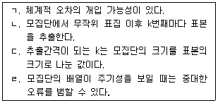
- ㄱ, ㄴ
- ㄱ, ㄴ, ㄷ
- ㄷ, ㄹ
- ㄱ, ㄴ, ㄷ, ㄹ
(정답률: 66%)
55. 측정에 있어서 신뢰성을 높이는 방법과 가장 거리가 먼 것은?
- 측정항목의 수를 늘린다.
- 측정항목의 모호성을 제거한다.
- 전문가의 의견을 듣고 문항을 만든다.
- 중요한 질문의 경우 유사한 문항을 반복하여 물어본다.
(정답률: 57%)
56. 다음 ( )에 알맞은 것은?
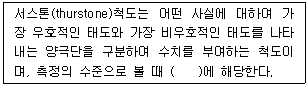
- 명목척도
- 서열척도
- 등간척도
- 비율척도
(정답률: 68%)
57. 다음과 같은 질문지의 성별(sex) 변수에 대한 설명으로 틀린 것은?
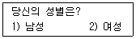
- 성별은 명목척도(nominal scale)이다.
- 여성만을 대상으로 한 조사에서 성별 변수는 포함시킬 필요가 없다.
- 성별 변수는 다른 변수(예: 교육수준)와 종합하여 하나의 새로운 변수로 만들 수 있다.
- 남성에게 1점, 여성에게 2점을 부여한 다음 그 평균을 계산하면 남성비를 구할 수 있다.
(정답률: 61%)
58. 지수에 관한 설명으로 틀린 것은?
- 단순지표로 측정하기 어려운 복합적인 개념을 측정할 수 있다.
- 경험적 현실세계와 추상적 개념세계를 조화시키고 일치시킨다.
- 변수에 대한 양적 측정치를 제공함으로써 정확성을 높여준다.
- 본래 의도한 속성을 정확히 측정하고 보다 일관성 있는 결과를 얻기 위해 단일 문항이 주로 활용된다.
(정답률: 61%)
59. 개념이 사회과학 및 기타 조사방법에 기여하는 역할과 가장 거리가 먼 것은?
- 개념은 연역적 결과를 가져다준다.
- 조사연구에 있어 주요 개념은 연구의 출발점을 가르쳐 준다.
- 개념은 언어나 기호로 나타내어 지식의 축적과 확장을 가능하게 해 준다.
- 인간의 감각에 의해 감지될 수 있는 현상에 대해서만 이해할 수 있는 방법을 제시해 준다.
(정답률: 76%)
60. 다음 사례에서 측정의 수준은?
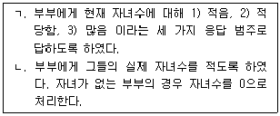
- ㄱ : 명목측정, ㄴ : 서열측정
- ㄱ : 서열측정, ㄴ : 비율측정
- ㄱ : 등간측정, ㄴ : 비율측정
- ㄱ : 서열측정, ㄴ : 등간측정
(정답률: 69%)
3과목: 사회통계
61. 모평균에 대한 95% 신뢰구간을 구하였다. 만약 표본의 크기를 4배 증가시키면 신뢰구간의 길이는 어떻게 변화하는가?
- 1/4만큼 감소
- 1/4만큼 증가
- 1/2만큼 감소
- 1/2만큼 증가
(정답률: 55%)
62. P(A)=1/3, P(B＼A)=1/5 일 때 P(A∩B)는?
- 1/15
- 3/15
- 5/15
- 8/15
(정답률: 68%)
63. 두 변수 X와 Y에 대한 자료가 다음과 같이 주어졌을 때 단순회귀모형으로 추정한 회귀직선으로 옳은 것은?
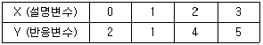
- Y=1.2+1.2X
- Y=1.2-1.2X
- Y=-1.2+1.2X
- Y=-1.2-1.2X
(정답률: 52%)
64. 기존의 금연교육을 받은 흡연자들 중 30%이하가 금연을 하는 것으로 알려져 있다. 어느 금연운동 단체에서는 새로 구성한 금연교육 프로그램이 기존의 금연교육보다 훨씬 효과가 높다고 주장한다. 이 주장을 검정하기 위해 임의로 택한 20명의 흡연자에게 새 프로그램으로 교육을 실시하였다. 검정해야 할 가설은 H0 : p ≤ 0.3 대 H1 : p ＞ 0.3 (p : 새 금연교육을 받은 후 금연율)이며, 20명 중 금연에 성공한 사람이 많을수록 H1에 대한 강한 증거로 볼 수 있으므로, X를 20명 중 금연한 사람의 수라 하면 기각역은 “ H ≥ c”의 형태이다. 유의 수준 5%에서 귀무가설 H0을 기각하기 위해서는 새 금연교육을 받은 20명 중 최소한 몇 명이 금연에 성공해야 하겠는가? (단, P(X ≥ c 금연 교육 후 금연율 = p)(오류 신고가 접수된 문제입니다. 반드시 정답과 해설을 확인하시기 바랍니다.)
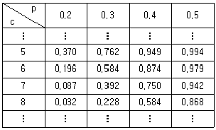
- 5명
- 6명
- 7명
- 8명
(정답률: 38%)
65. 일원배치법에서 k개의 각 처리에 대한 반복수가 r로 모두 동일한 경우, 처리의 자유도와 잔차의 자유도가 옳은 것은?
- k, r-1
- k-1, r-1
- k, rk-1
- k-1, kr-k
(정답률: 51%)
66. 상관계수에 대한 설명으로 틀린 것은?
- 1차 직선의 함수관계가 어느 정도 강한가를 나타내는 측도이다.
- 상관계수가 –1 이라는 것은 모든 자료가 기울기가 음수인 직선위에 있다는 것을 의미한다.
- 상관계수가 0 이라는 것은 두 변수 사이에 어떠한 관계도 없다는 것을 의미한다.
- 범위는 –1에서 1이다.
(정답률: 53%)
67. 어떤 제품의 수명은 특정 부품의 수명과 밀접한 관계가 있다고 한다. 제품수명(Y)의 평균과 표준편차는 각각 13과 4이고 부품수명(X)의 평균과 표준편차는 각각 12와 3이다. 상관계수가 0.6일 때 추정회귀 직선
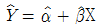
에서 기울기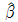
의 값은?- 0.6
- 0.7
- 0.8
- 0.9
(정답률: 41%)
68. 종업원 수가 1,600명인 회사의 종업원 하루 평균 용돈을 조사하였더니, 평균 10,000원, 표준편차 5,000원이었다. 이 회사의 종업원 가운데 400명을 임의로 선발하여 표본조사 한다면, 이 표본평균의 표준편차는?
- 125
- 250
- 2,500
- 5,000
(정답률: 50%)
69. 다음은 일원분산분석에 대한 결과표이다. ( )에 알맞은 것은?
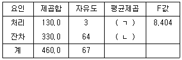
- ㄱ : 47.81, ㄴ : 7.62
- ㄱ : 45.64, ㄴ : 6.49
- ㄱ : 43.33, ㄴ : 5.16
- ㄱ : 41.07, ㄴ : 4.67
(정답률: 70%)
70. 한 개의 공정한 동전을 10번 던지는 실험에서 확률변수 X를 앞면(H)이 나온 횟수로 정의하면 확률변수 X의 평균은?
- 0
- 1
- 5
- 10
(정답률: 72%)
71. A분포와 B분포의 특성에 관한 설명으로 틀린 것은?
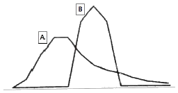
- A의 최빈값은 B의 최빈값보다 작다.
- A의 분산은 B의 분산보다 크다.
- A의 왜도는 양(+)의 값을 가진다.
- B의 왜도는 음(-)의 값을 가진다.
(정답률: 63%)
72. 정규분포를 따르는 어떤 집단의 모평균이 10인지를 검정하기 위하여 크기가 25인 표본을 추출하여 관측한 결과 표본평균은 9, 표본표준편차는 2.5 이었다. t-검정을 할 경우 검정통계량의 값은?
- 2
- 1
- -1
- -2
(정답률: 43%)
73. 다음은 대응되는 두 변량 X와 Y를 관측하여 얻은 자료 (x1, y1), (x2, y2), (xn, yn)으로 그린 산점도이다. X와 Y의 표본상관계수의 절댓값이 가장 작은 것은?
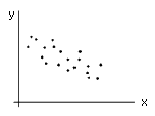
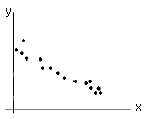
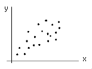
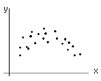
(정답률: 62%)
74. 행변수가 M개의 범주를 갖고 열변수가 N개의 범주를 갖는 분할표에서 행변수와 열변수가 서로 독립인지를 검정하고자 한다. (i, j)셀의 관측도수를 Oij, 귀무가설 하에서의 기대도수의 추정치를
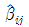
라 할 때, 이 검정을 위한 검정통계량은?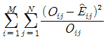
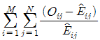
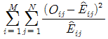
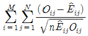
(정답률: 65%)
75. 모집단의 확률분포가 정규분포를 따른다고 한다. 이 모집단의 확률분포에 대한 설명으로 틀린 것은?
- 모집단의 확률분포는 모평균에 대해 대칭인 분포이다.
- 모집단의 확률분포는 모평균과 모분산에 의해서 완전히 결정된다.
- 이 모집단으로부터 표본을 취할 때 표본의 관측값이 모평균으로부터 표준편차의 2배 거리 이내의 범위에서 관측될 확률은 약 95%이다.
- 분산이 클수록 모집단의 확률분포는 꼬리부분이 얇고 길게 된다.
(정답률: 53%)
76. 어느 한 집단에 대해서 신체검사를 하였다. 신체검사 결과 키와 발의 산포크기를 비교하고자 할 때 가장 적합한 것은?
- 변동계수
- 분산
- 표준편차
- 결정계수
(정답률: 59%)
77. 다음 검정 중 검정통계량의 분포가 나머지 셋과 다른 것은?
- 모분산이 미지이고 동일한 두 정규모집단의 모평균의 차에 대한 검정
- 모분산이 미지인 정규모집단의 모평균에 대한 검정
- 단순회귀모형 y=β0+β1x+ε에서 모회귀직선 E(y)=β0+β1x 의 기울기 β1에 관한 검정
- 독립인 두 정규모집단의 모분산의 비에 대한 검정
(정답률: 38%)
78. k개의 독립변수 xi(i=1, 2, ⋯, k)와 종속변수 y에 대한 중회귀모형 y=α+β1x1+⋯+βkxk+ε을 고려하여, n개의 자료에 대해 중회귀분석을 실시하고자 한다. 총 편차
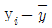
를 분해하여 얻을 수 있는 세 개의 제곱합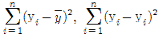
, 그리고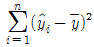
의 자유도를 각각 구하면?- n, n-k, k
- n-1, n-k-1, k-1
- n, n-k-1, k-1
- n-1, n-k-1, k
(정답률: 40%)
79. A대학교 학생 전체에서 100명을 임의 추출하여 신장을 조사한 결과 평균이 170㎝이고 표준편차가 10㎝이었다. A대학교 학생 평균 신장의 95% 신뢰구간은? (단, Z∼N(0.1) 이고 P(Z ＞ 1.96)=0.025이다.)
- (168.04, 171.96)
- (168.14, 171.86)
- (168.24, 171.76)
- (168.34, 171.66)
(정답률: 57%)
80. 유의수준 α에서 단측가설검정을 시행하고자한다. 다음 중 귀무가설(H0)을 기각할 수 있는 유의확률 p값의 조건으로 옳은 것은?
- α ＞ p
- α ＜ p
- 1-α ＞ p
- 1-α ＜ p
(정답률: 52%)
81. 다음 중 산포도의 측도가 아닌 것은?
- 사분위수 범위
- 왜도
- 범위
- 분산
(정답률: 50%)
82. 구간 (0, 1)에서 연속인 확률변수 X의 누적분포함수가 F(x)=x일 때, X의 평균은?
- 1/3
- 1/2
- 1
- 2
(정답률: 55%)
83. 국내 어느 항공회사에서는 A노선의 항공편을 예약한 사람 중 20%가 예정시간에 공항에 도착하지 못하여 탑승하지 못하거나 사전에 예약을 취소 또는 변경한다는 사실을 알고, 여석 발생으로 인한 손실을 줄이기 위해 300석의 좌석이 마련되어 있는 이 노선의 특정항공편에 360건의 예약을 접수 받았다. 이 항공편을 예약하고 예정 시간에 공항에 나온 사람들 모두가 탑승하여 좌석에 앉을 수 있을 확률을 아래 확률분포표를 이용하여 구한 값은? (단, 연속성 수정을 이용하고, 소수의 계산은 소수점이하 셋째자리에서 반올림한다.)
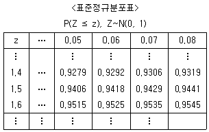
- 0.9515
- 0.9406
- 0.9418
- 0.9429
(정답률: 30%)
84. 다음은 중회귀식
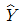
= 39.69+3.37X1+0.53X2 의 회귀계수표이다. 다음 ( )에 알맞은 값은?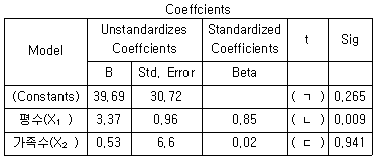
- ㄱ : 1.21, ㄴ = 3.59, ㄷ = 0.08
- ㄱ : 1.29, ㄴ = 3.51, ㄷ = 0.08
- ㄱ : 10.21, ㄴ = 36.2, ㄷ = 0.80
- ㄱ : 39.69, ㄴ = 3.37, ㄷ = 26.5
(정답률: 51%)
85. 정규분포를 따르는 모집단의 모평균에 대한 가설 H0 : μ = 50 vs H1 : μ ＜ 50을 검정하고자 한다. 크기 n=100의 임의표본을 취하여 표본평균을 구한 결과
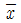
= 49.02를 얻었다. 모집단의 표준편차가 5 라면 유의확률은 얼마인가? (단, P(Z≤-1.96)=0.025, P(Z≤-1.645)=0.⑤)- 0.025
- 0.⑤
- 0.95
- 0.975
(정답률: 46%)
86. 분산분석을 수행하는데 필요한 가정이 아닌 것은?
- 독립성
- 불편성
- 정규성
- 등분산성
(정답률: 56%)
87. 표본으로 추출된 6명의 학생이 지원했던 여름방학 아르바이트의 수가 다음과 같이 정리되었다. 피어슨의 비대칭계수(p)에 근거한 자료의 분포에 관한 설명으로 옳은 것은?
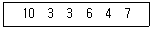
- 비대칭계수의 값이 0에 근사하여 좌우대칭형 분포를 나타낸다.
- 비대칭계수의 값이 양의 값을 나타내어 왼쪽으로 꼬리를 늘어뜨린 비대칭분포를 나타낸다.
- 비대칭계수의 값이 음의 값을 나타내어 왼쪽으로 꼬리를 늘어뜨린 비대칭분포를 나타낸다.
- 비대칭계수의 값이 양의 값을 나타내어 오른쪽으로 꼬리를 늘어뜨린 비대칭 분포를 나타낸다.
(정답률: 55%)
88. 성공의 확률이 p인 베르누이 시행을 n회 반복하여 시행했을 때, 이항분포에 대한 설명으로 틀린 것은?
- n회 베르누이 시행 중 성공의 횟수는 이항분포를 따른다.
- 평균은 np이고, 분산은 npq, (q=1-p)이다.
- 베르누이 시행을 n번 반복시행 했을 때, 각 시행은 배반이다.
- n번의 베르누이 시행에서 성공의 확률 p는 모두 같다.
(정답률: 63%)
89. 5와 6의 눈이 없는 대신 4의 눈이 세 개인 공정한 주사위가 있다. 이 주사위를 던져서 나오는 눈의 수를 X라 하면, X의 분산은?
- 1
- 4/3
- 8/5
- 3
(정답률: 49%)
90. 다음 일원배치분산분석 모형에 대한 설명으로 틀린 것은?
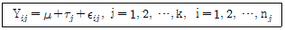
- εij는 서로 독립이고, 평균은 0, 분산은 σ2인 정규분포를 따른다고 가정한다. 는 서로 독립이고, 평균은 0, 분산은 인 정규분포를 따른다고 가정한다.
- τj는 각각의 집단평균(μj)과 전체평균(μ)과의 차이를 나타낸다.
 을 만족한다.
을 만족한다.- 귀무가설은 H0 : μ1 = μ2 = ⋯ = μk 이다
(정답률: 45%)
91. 10명의 스포츠댄스 회원들이 한 달간 댄스 프로그램에 참가하여 프로그램 시작 전 체중과 한 달 후 체중의 차이를 알아보려고 할 때 적합한 검정방법은?
- 대응표본 t-검정
- 독립표본 t-검정
- z-검정
- F-검정
(정답률: 61%)
92. 어떤 승용차의 가격이 출고 연도가 지남에 따라 얼마나 떨어지는가를 알아보기 위하여 이 승용차에 대한 중고판매가격에 대한 조사를 하였다. 사용년수와 중고차 가격과의 관계를 보기 위한 적합한 분석방법은?
- 단순회귀분석
- 중회귀분석
- 분산분석
- 다변량분석
(정답률: 56%)
93. 단순회귀분석의 모형에서 오차항의 기본가정에 대한 설명으로 틀린것은?
- 오차항은 정규분포를 따른다.
- 오차항은 서로 독립이다.
- 오차항의 기댓값은 0이다.
- 오차항의 분산이 다르다.
(정답률: 59%)
94. A반 학생은 50명이고 B반 학생은 100명이다. A반과 B반의 평균 성적이 각각 80점과 85점이었다. A반과 B반의 전체 평균성적은?
- 80.0
- 82.5
- 83.3
- 84.5
(정답률: 69%)
95. 사분위수범위를 바르게 나타낸 것은?
- 제2사분위수 - 제1사분위수
- 제3사분위수 - 제2사분위수
- 제3사분위수 - 제1사분위수
- 제4사분위수 - 제1사분위수
(정답률: 69%)
96. 어느 지역 주민의 3%가 특정 풍토병에 걸려있다고 한다. 이 병의 검진방법에 의하면 감염자의 95%가 (+)반응을, 나머지 5%가 (-)반응을 나타내며 비감염자의 경우는 10%가 (+)반응을, 90%가 (-)반응을 나타낸다고 한다. 주민 중 한 사람을 검진한 결과 (+)반응을 보였다면 이 사람이 감염자일 확률은?
- 0.1⑤
- 0.227
- 0.885
- 0.950
(정답률: 52%)
97. 모분산의 추정량으로써 편차제곱합
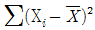
을 n으로 나눈 것보다는 (n-1)로 나눈 것을 사용한다. 그 이유는 좋은 추정량이 만족해야 할 바람직한 성질 중 어느 것과 관계있는가?- 불편성
- 유효성
- 충분성
- 일치성
(정답률: 41%)
98. 교차표를 만들어 두 변수 간의 독립성 여부를 유의수준 0.⑤에서 검정하고자 한다. 검정 결과 유의확률이 0.55로 나왔을 때, 해석이 옳은 것은?
- 두 변수 간에는 상호 연관 관계가 있다.
- 두 변수는 서로 아무런 관계가 없다.
- 이것만으로 상호 어떤 관계가 있는지 말할 수 없다.
- 한 변수의 범주에 따라 다른 변수의 변화 패턴이 다르다.
(정답률: 45%)
99. 귀무가설이 거짓임에도 불구하고 귀무가설을 기각하지 못하는 오류는?
- 제1종 오류
- 제2종 오류
- α-오류
- 임계오류
(정답률: 60%)
100. 컴퓨터 칩을 만드는 회사에서 10%의 불량품이 만들어진다고 한다. 하루에 생산된 컴퓨터 칩 중에서 20개를 임의로 추출하여 검사할 때 불량품 개수의 평균과 분산은?
- μ=2.0, σ2 = 2.0
- μ=2.0, σ2 = 1.8
- μ=1.8, σ2 = 2.0
- μ=1.8, σ2 = 1.8
(정답률: 68%)